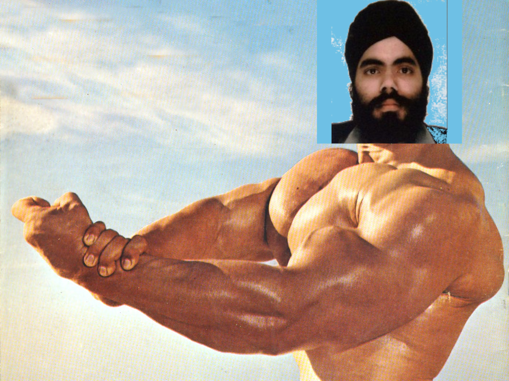

Gurmukh Chandan: The Sitar King
If you haven't heard of Gurmukh Chandan, don't worry.
He is still an up-and-coming King of all things cerebral. Explore the page below to immerse yourself in Gurmukh's mind, body and soul.
The Mind: a healing phenomenon
The Problem Solver
Gurmukh has experience solving a variety of clinical and non-clinical problems posed by patients in both emergency and non-emergent settings, with consideration of human factors and error minimisation.
The Team Player
With experience interfacing with different colleagues during daily work in anaesthesia and critical care (in time-pressured emergencies, both in the operating theatre and emergency department), Gurmukh leads the team to ensure safe patient care.
The Master Communicator
Gurmukh has delivered medical presentations, both to an audience and smaller groups around the UK and abroad. He has organised and taught on medical courses and delivered formal and informal teaching sessions to medical students, colleagues, and trainee doctors.

The Research Demon
Gurmukh has experience recruiting for clinical trials, and has completed several audits and service evaluations, the results of which led to him creating some local policy. The research demon has published two articles, one a textbook chapter and one on some research he undertook during one of his clinical placements.
The Medical Messiah
Gurmukh has taken and passed several difficult post-graduate medical exams which span several scientific domains. He holds several certifications for providing advanced care and has taught cardiac and lung ultrasound on several courses.
The Body: a hench mofo
The Soul: a magician musician
"Music is a moral law. It gives soul to the universe, wings to the mind, flight to the imagination, and charm and gaiety to life and to everything"Plato